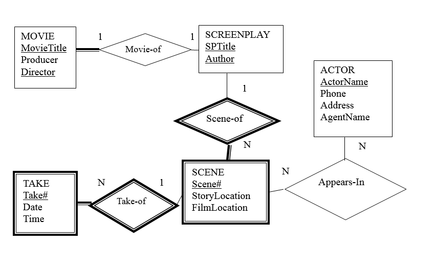
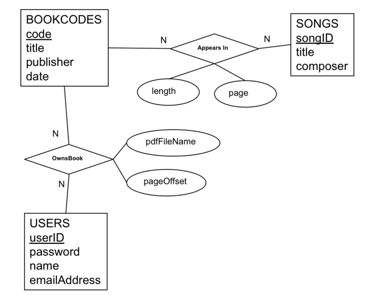
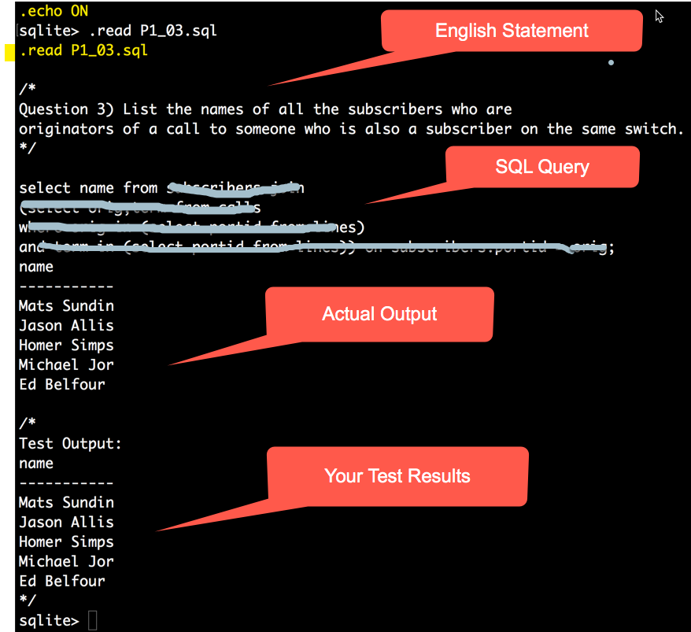
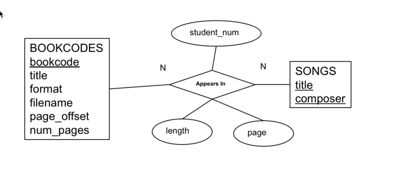

(Marking Instructions in Red)
Total 46 marks
Problem 1 (6 marks)
Problem 2 (6 marks)
Problem 3 (6 marks)
Problems 4 (22 marks) [4.1 -2 marks, 4.2 -2 marks, 4.3-4.8 -3 marks each]
Question 5 (6 marks) [2 each from requirement 5.1 - 5.3]
Revisions:
Rev 1 (2018 11 18): fixed script file names for problem 4 queries.
ASSIGNMENT SUBMISSION FORMAT REQUIREMENTS. ONLY ASSIGMENTS THAT ADHERE TO THE SUBMISSION REQUIREMENTS WILL BE GRADED
| Req Type | SUBMISSION REQUIREMENTS |
|---|---|
| ALL | GENERAL Problems that require written answers or diagrams must be submitted as .pdf documents. (DON'T submit .doc word processor or other document formats, .txt, .html, .xml etc. ONLY .pdf) PDF documents must be well organized and not a collection of isolated files or content. Label what answer goes with what problem for example. (For multiple questions involving PDF's you can put everything in one document, or have a separate document for each question -just label the files clearly.) Diagrams must NOT be scans of hand drawn work. They must be created with an approriate diagraming tool. No hand written or hand drawn work will be accepted. .zip is the only compression format accepted. If you compress your entire submission or indivdual parts of it use only .zip format (NOT .rar, or .tar, or .gzip or whatever). Only .zip is accepted. (.zip is the format that culearn uses to compress your submissions when they are delivered to the TA's for grading.) |
Problem 1,2,3 |
Submit .pdf document with the following for each question:
|
Problem 4 |
Submit .pdf ER final ER model of your project database. Submit .sql script that will generate your SQLite database. Submit 6 .sql query files named P4_03.sql ... P4_08.sql (one for each problem P4.3-P4.8) that adhere to requirements RM1, RM2, RM3
|
Problem 5 |
You must supply ALL the files needed for your javascript project including the database it uses. The code should be organized as the demo code is. DO NOT submit the node_modules directory that results when you install npm modules. In other words, delete that directory before you submit your code. The marking TA will run your code by executing npm install //to install the needed npm modules listed in the package.json file node server.js //to start your server and visit http://localhost:3000/index.html from a chrome browser to access your app (unless you provide a different url in a README.txt file. If your code cannot be installed and launched as above the mark for problem 5 is zero. |
In this assignment you will get more practice with functional dependencies and present your term project database as an sql script with sql queries and also demonstrate some of it with an node.js/javascript based api application.
Problems 1,2, and 3 are to give you practice designing relational tables using only functional dependencies and minimal covers to achieve 3NF tables.
You are encouraged to use the database normalizer app that is posted on the course website to check your answers or help with your experiments. However the questions are intended as practice for the final exam where you need to be able to do this yourself "on paper".
For each problem model the problem using only functional dependencies and then ensure that, if necessary, they are nomalized to 3NF. It might well happen that your initial dependencies are already a minimal cover representing 3NF if mapped to tables. It might also happen that you need some normalization.
Here we are viewing table design as starting with a list of attributes that someone wants to store in a database or a ER model and then using functional dependencies to express relationships and constraints among those attributes. Then a minimal cover of those dependencies is found and that is used to form the 3NF tables. These questions is based primarily on section on functional dependencies in the course notes.
The "getting started" link in the online database normalizer app describes how E-R models can be mapped to functional dependencies. Here are some more details.
An entity A,B,C,D,E can be represented by the functional dependency A,B->C,D,E
A weak entity A,B,C,D that is a weak entitity of strong entity E,F,G can be represented by the functional dependency A,E->B,C,D
There is a little trick to dealing with N:N relationships as a functional dependency. If X and Y are in a N:N and Z is an attribute of the relationship the you can describe it as X,Y->Z. But if X and Y are in an N:N relationship that has no attributes then you can describe that is X,Y->temp. Then do the design and at the end just remove the column temp. For example if Projects have many Employees and Employees work on many Projects then you can captures that as a functional dependency: ProjNum, EmpNum ->temp. But if the database also keeps track of the number of hours the employees work on each project then you can captures that as: ProjNum,EmpNum -> Hours.
The reason this trick is necessary is because algorithms that do normalization are "allowed" to remove trivial dependencies. ProjNum,EmpNum->ProjNum,EmpNum is trivial because the RHS is a subset of the LHS and will be removed. But if it is removed a table [ProjNum,EmpNum] will never be formed. So do the design with ProjNum,EmpNum -> temp.
Finally be careful because if several entities have the same attribute name you will have to assign different names in the functional dependencies. When establishing a foreign key relationship to implement a relationship by "adding columns to an existing table" you might have to choose non-confilicting attribute names.
Problem 4 is where you (finally) present your project database as an SQL script and SQL queries.
Problem 5 is an node.js/javascript application that presents the main N:N relationship in your project database.
Consider a Database that keeps track of scenes filmed for different movies. A movie uses a screenplay (or story) which is broken down into scenes. The movie will also have the same scenes because it is a movie of that screenplay. Not all screenplays in the database become movies, but every movie is of a particular screenplay.
Also, a screenplay is used for only one movie. That is, there are not two different movies made of the same screenplay. Scenes have a story-location where the story takes place and a filming-location where the filming will actually be done. Each scene has some actors that appear in that scene. Actors have a name, phone number, address and agent that represents them. A scene can be filmed more than once (maybe the actor forgot their lines). Each filming of a scene is called a “Take”. The movie is typically created by using the best take of each scene and putting them together. Below is an E-R diagram that captures these requirements.
Using the proposed E-R diagram provided, answer the questions related to designing the tables. (Note: thick lines denote weak entities or mandatory participation in relationships.)
Also in your functional depdencies use TakeNo and SceneNo instead of Take# and Scene# (i.e. avoid the # character).

R1.1 [2 marks] Provide a set of Functional dependencies that completely captures all the features in the situation depicted by the ER diagram.
2 marks if the answer is correct and complete (e.g. functional dependencies completely capture what is represented in the ER model), 1 mark if it's incomplete, 0 marks if its wrong.
R1.2 [2 marks] Provide a minimal cover for the set of functional dependencies.
R1.3 [2 marks] Based on your minimal cover find a dependency preserving, 3rd normal form set of tables use for your database that captures all of the data intended by the E-R model. Show for each table in the decomposition, its key and the functional dependencies that apply to it (that is, map to it).
In assignment 2 you provided a script to populate a table of fake book songs. It was intended to provide an indexing database for music students. Here is a modified scenario and possible ER model.
Musicians use fake book charts to play and improvise from. We want to create a database that will use the indexing information provided in assignment 1 an support the following.
The users (musicians) will upload their own copies of .pdf books to the application. The books supported by the database will be those referred to by the BOOKCODES entity. When a musician has uploaded a book file they will have the right to be shown pages of from their copy of the book using the indexing data in the database. The musicians will only be allowed to see the page of books they have uploaded, but they can search all of the indexing data. For copyright reasons they will not be allowed to see contents from other books.
The indexing information should provide the books and page numbers for the various songs. Book files (.pdf) uploaded by users book file should also have some kind of offset information to account for introductory pages in the uploaded book file. That is, if the song is indexed to be on page 1 but that is the 10th page of a particluar .pdf book file then an offset should be stored in the database to account for this. The database should store information about the books including their book code (unique), title, publisher, and date of publication.
The database should support a collection of users. Users have a name, email address, userid, password. The database must keep track of which books which users are allowed to access.
Here is a proposed E-R diagram provided for the situation described above.

R2.1 [2 marks] Provide a set of Functional dependencies that completely captures all the features in the situation depicted in the ER diagram.
R2.2 [2 marks] Provide a minimal cover for the set of functional dependencies.
R2.3 [2 marks] Based on your minimal cover find a dependency preserving, 3rd normal form set of tables use for your database that captures all of the data intended by the E-R model. Show for each table in the decomposition, its key and the dependencies that apply to it (that is, map to it).
For this problem we want to design database tables for the following proposed set of attributes. The design is to be done entirely using functional dependcies. That is, capture all constraints in the form of a dependency that will eventually result in appropriate tables. You are encouraged to use the Database Normalizer app provided on the course website to validate your design.
Consider the following attributes to be stored in a relational database.
| attribute | comment |
|---|---|
| stdnum | student number |
| student email address | |
| name | student name |
| city | student address city |
| strnum | student address street number |
| street | student address street |
| postcode | student address postal code |
| area_code | student phone number area code |
| office_code | student phone number office code |
| station_code | student phone number station code |
| course_num | course number e.g. COMP3005 |
| course_name | course name e.g. Fundamentals of Databases |
| course_section | student section e.g. F2018-A |
| department_name | name of department offering course |
| room_num | location of a course e.g. MC2000 |
| building | building name e.g. Minto Centre |
| period | time table period e.g. Tue,Thu 10:00-11:30 |
| term | term e.g. fall2018 |
| grade | grade student received in a course |
Here are the known constraints:
1) Students can have only one name, address, phone number and email address
in the database.
2) Either a student's student number or email address uniquely identify the student.
2) A phone number area code and office code is associated
with a particular city. That is, the city is a unique fact about the phone
number.
3) A postal code uniquely identifies a city. That is, knowing just
someone's postal code uniquely determines the city part of their address.
4) A course number does not identify a term, time or offering of the course, but a course section identifies a course offering including the year, term, and section letter. A course number identifies the department offering the course.
5) The combination of period, room, and term identifies a course section. The database should provide a way to see this scheduling information.
6) The room number identifies
which building the room is in. That is, building is a unique fact about the the
room number.
7) Students are enrolled in many courses sections and course sections have many
students enrolled in them. The database needs to keep track of this enrollment information.
8) The combination of student number and course
number uniquely idenfities a grade the student received in some offering (section) of the course. Student's grades are reported for the course number. For example: a student enrolls in COMP3005W2015-B but on their transcript it just shows that they got a grade of B+ in COMP3005.
R3.1 [2 marks] Write down
the functional dependencies that would capture all the requirements of the database. You may add more constraints or assumptions if needed but if so write them down with the functional depedencies.
R3.2 [2 marks] Provide a minimal cover for the set of functional
dependencies.
R3.3 [2 marks] Based on your minimal cover find a dependency preserving, 3rd normal set of tables use for your database that captures all of the data intended by the E-R model.Show for each table in the decomposition, its key and the dependencies that apply to it (that is, map to it).
Throughout the course you have been designing a project database on your own. In this question we want you to present it as an .sql script to create the database and then run some meaningful sql queries against it.
R4.1 [2 marks] Provide a final ER model of your database that shows us exactly what you implemented
R4.2 [2 marks] Provide an .sql script file that will build your database. The marker will first build your database by launching sqlite3 in a command console and the executing .read database.sql. (If your database script won't run then the mark for the remainder of this question is 0.)
Provide six sql queries that you feel best illustrates the intended use of your project database. For each query provide the following.
RM 1 [1 mark] An english description of what the query is supposed to find. Include it as a comment in your query script so the TA can see it when they are running your script) Also include in your comment why this query is relevant, or important, to the database you have chosen to build.
RM 2 [1 mark] Your SQL query code
RM 3 [1 mark] The anwer table you obtained put as a comment at the bottom of the sql script so we can compare it to answer we get when we run the script.
Submission: submit 6 individual sql scripts called (REV 1:) P4_03.sql - P4_08.sql.
When your script for a problem is run it would look something like the following to the marker (needs .echo ON when running in sqlite3 command interface).

Your choice of queries should be distinct and relevant. Don't just provide 6 minor variations of the same thing. You will not get marks for queries that are just minor variations of another query.
Problem 4.3 Your query.
Problem 4.4 Your query.
Problem 4.5 Your query.
Problem 4.6 Your query.
Problem 4.7 Your query.
Problem 4.8 Your query.
One of the most important relationship types that needs to be presented to users is the N:N relationship on an E-R model. As an example in the fake book database there is an N:N relationship between books and songs. A book contains many songs and a song appears in many books. This is depicted in the following E-R model structure.

Note this scenario is for an application where only one pdf file of a book exists so that things like filename and page_offset can be part of the properties of a book.
This structure has been implemented with the following two tables. Notice that in implementation the songs entitiy is actually represented within the N:N table (which is called songs) because the songs entitiy is all key and fully absorbed, or represented within, the N:N table. This is pretty typical in database design. Also in implementing the N:N table a convenience id key has been added which is not in the E-R model (again pretty typical).
CREATE TABLE bookcodes ( bookcode text primary key not null, title text not null, format text, filename text, page_offset integer, num_pages integer default 0 ); CREATE TABLE songs ( id integer primary key not null, title text not null, --title of song composer text, --composer(s) of song bookcode text, --book song is from page integer, --page number of song in book length integer, --length of song in pages studentnum text --contributor of data );
It happens often in data-based apps that a user wants to select items in an N:N relationship table and then filter them by one of the participating entities in the relationship. For example the user wants to find songs that appear in all the books but then filter that to show only the songs coming from a particular book. Or the user wants to search all the books for songs written by a particular composer and then filter that to show only their songs in a particular book.
We have implemented a node.js/javascript application, as demo code, that shows this. To run the demo code you need to first install the required npm modules by executing:
npm install
then you run the server by executing:
node server.js
and then access the app from a browser by visiting:
http://localhost:3000/index.html
In the app the user can search for songs based on a keyword that is matched with the song's title or composer. The database is searched across all books. When the results are presented to the user is shows two lists: the songs and the books from which those songs came. If the user selects a song the songs details are shown. But if they select a book then songs contained in just that book are shown. This way the user can filter the search results to a particular book from among the intial results shown for all books. This is a very common data display scenario.
Here is a short screen capture video showing how the demo code works. In this video the user searches for songs participating in the N:N relationship and then filters the search by selecting one of the books that was among the search results. Later in the video the user searches by composer (Jobim) and then filters by book to see all the songs in that book by the composer. When the user selects a particular book from among the search results all the songs by that composer in that book are shown.
By the way, when songs are searched in the N:N relationship only a limited number of results are returned by the server because there could be thousands. However when a book is selected to filter by the query is re-sent to that server and all the results for that book are included because there would only be a few hundred at most. This way if you blank out the search keyword when you filter by a book you can see all the songs in that book (ordered by page number).
For this problem we want you to modify the demo code, or write your own from scratch, to do the same for the most important N:N relationship in your project database. That is, pick something you want the user to be able to search for in a table that implements an N:N relationship (e.g. songs that appear in books) and then allow them to filter the search by one of the entities that participate in the N:N relationship (e.g. books).
R5.1 The user should be able use a keyword based search for items (rows) in one of your N:N relationships in your database.
R5.2 The results should be shown to the user in two lists: one representing the found rows in the N:N relationship table (e.g. songs from books) and the other items from one of the participating entities that can be used to filter the search (e.g. books where the songs came from).
R5.3 The user should be able to filter the search by selecting one of the items in the participating entity list (e.g. book) and see only the search items (e.g. songs) that came from that item (e.g. book).
Code Submission and Marking:
see submission requirements in the table at the start of the assignment.